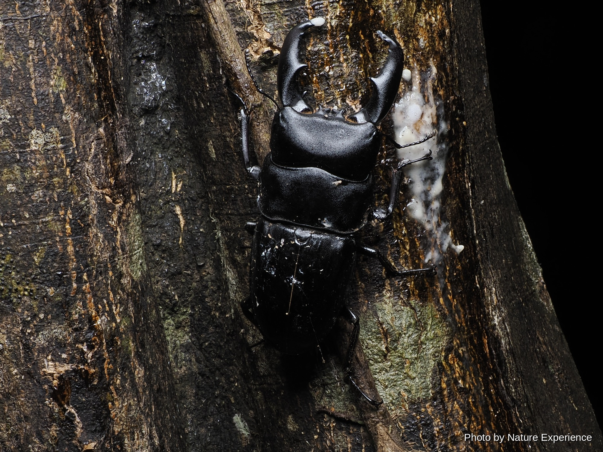
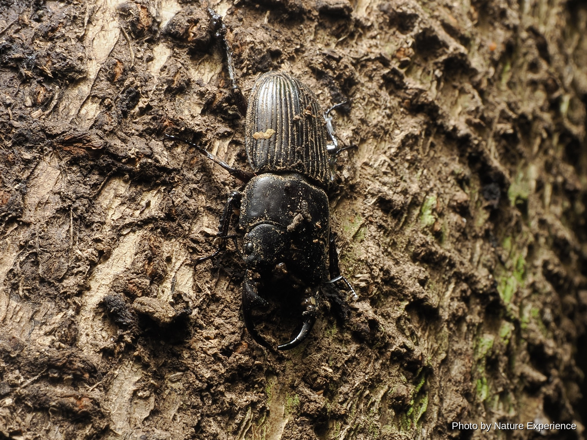
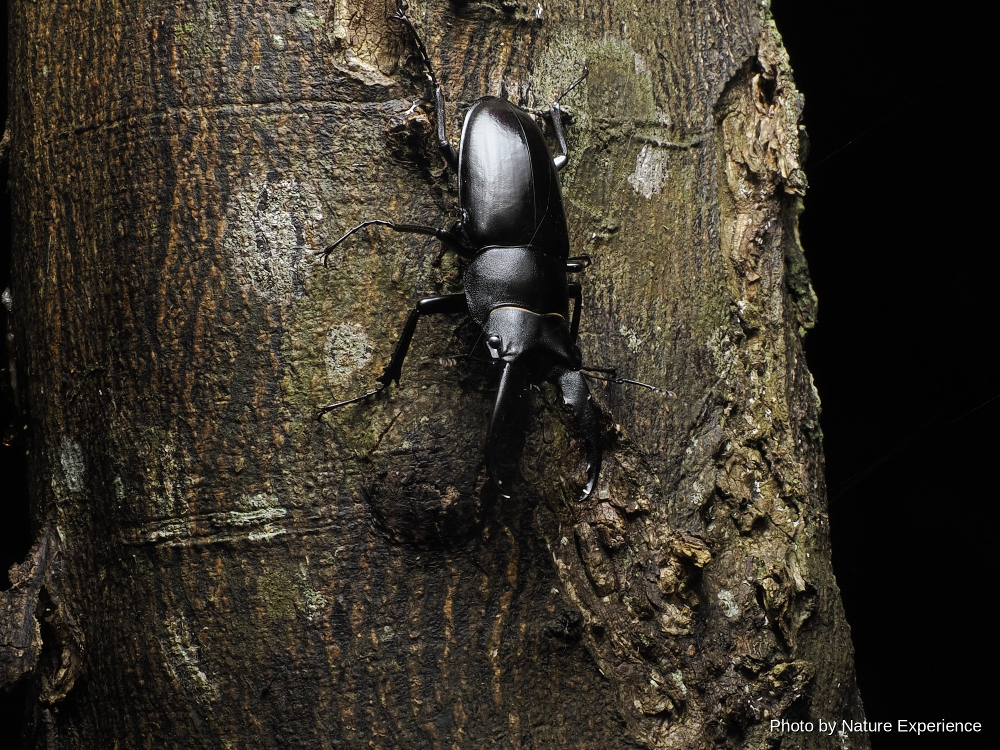
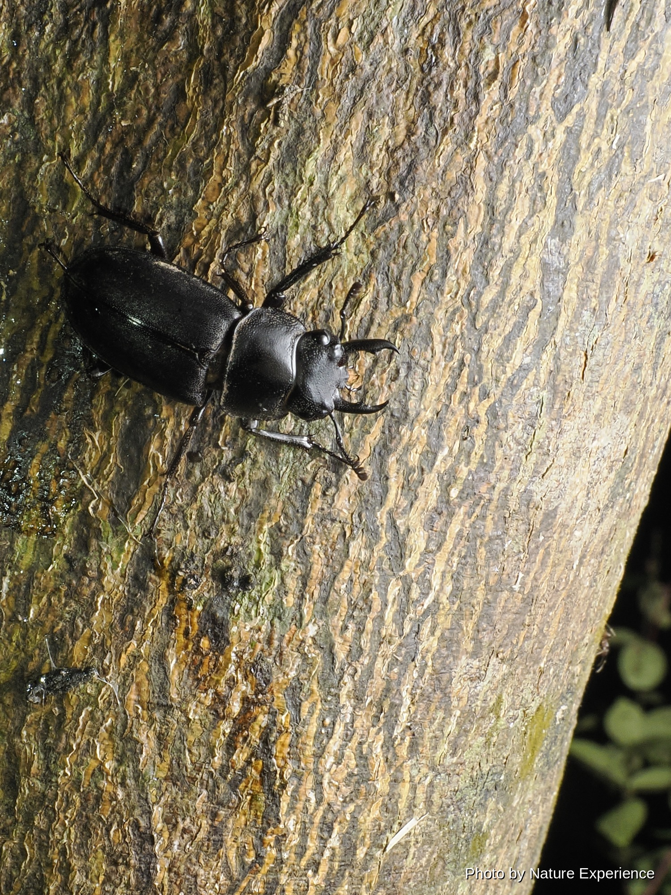
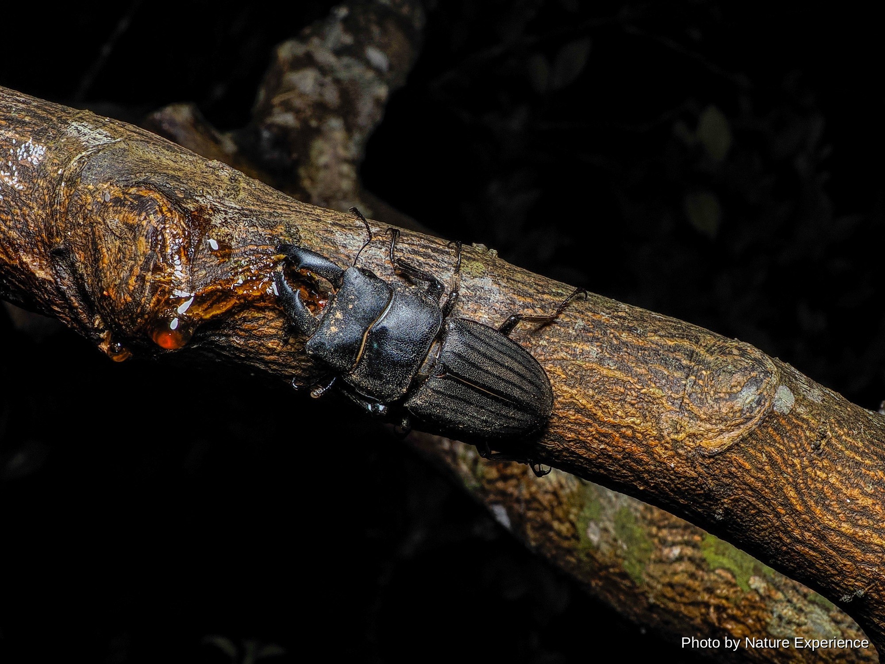

アマミヒラタクワガタ
奄美諸島に生息するヒラタクワガタの亜種。奄美大島では一番生息数が多いクワガタ。飼育するとかなり大型になる人気種。みかんの木、タブ、シイ、アカメガシワの樹液に集まる。野外では。

CREATURES / KUWAGATA
夏の夜、樹液のにおいに集まるクワガタたち。奄美大島には、島ならではの個性豊かな種類が暮らしています。
ABOUT
奄美大島の森には、夏の夜を中心にさまざまなクワガタが現れます。樹液の出る木や林道沿いで、力強い姿を見つけられることがあります。
大きなあごを持つもの、小さな体で樹皮に隠れるものなど、その姿や暮らし方は種類ごとに異なります。奄美だけに分布する貴重な種類もいます。
森で出会えたときは、樹液を吸う姿や動きを静かに観察し、自然の中で暮らす姿を写真に残して楽しんでください。
生き物は写真におさめて楽しみましょう。採集や持ち出しに関するルールは種類や地域で異なるため、条例や立入規制を確認し、樹液が出る木や生息環境を傷つけないようにしてください。
STAG BEETLES OF AMAMI
奄美大島の森で出会えるクワガタを紹介します。写真や名前をクリックすると、それぞれの詳しいページを見ることができます。
奄美諸島に生息するヒラタクワガタの亜種。奄美大島では一番生息数が多いクワガタ。飼育するとかなり大型になる人気種。みかんの木、タブ、シイ、アカメガシワの樹液に集まる。野外では。

コクワガタの名が付くがヒメオオクワガタに似ている点が多い。大あごは短く強く湾曲し、足やフセツは長い。発生時期5月下旬から10月。本土のコクワガタほど個体数は多くない。
発生時期9月から10月頃、スダジイの巨木が密集する深い森の中で観察できる。奄美大島（付属島含む）5市町村・徳之島3町の希少野生動植物保護条例により採集禁止。密猟防止のため山。
発生時期7月から9月頃。奄美大島のみに分布する希少種。条例により採集禁止。標高300m以上の原生林に生息。夜行性で木の上部でメスを待つオスが見られるが目視では確認しづらい。
ネブトクワガタの奄美諸島亜種で、国内産ネブトクワガタの亜種では最も大型になる。発生時期5月から10月頃。タブ、シイ、アカメガシワ、ソウシジュの樹液に来ることがある。野外では。

発生時期6月中旬から9月上旬。日本のノコギリクワガタの中では奄美大島産のものが特に大型で、大顎が長く太く立派。みかんの木、アカメガシワ、タブ、シイ、熟したアダンの実やバナナ。

全身つやがあり独特の大あごを持ち、一年中朽木の中で過ごす。カシ・シイ類の倒木、落ち葉の下から通年見つかる。雌雄判別が難しい。奄美では局所的に分布し、ほとんど樹液に来ないので。
5月から9月頃活動、8月頃が一番よく見られる。条例により採集禁止。比較的標高が高い地域の方が可能性は高い。スダジイやみかんの木の細枝についていることが多い。大型個体は大あご。

発生時期4月下旬から10月頃、ピークは7月。上翅に明確なスジが8本ある珍しい日本固有種で奄美諸島にしか生息していない。みかんの木やタブ、アカメガシワ、シイ、バナナトラップや。

EXPLORE MORE
カテゴリーを選んで、奄美大島の生き物をもっと見てみましょう。
NIGHT FIELD TOUR
ガイドと一緒に、生き物を探しながら夜の森を観察できます。
ナイトツアーの内容や料金はこちら →